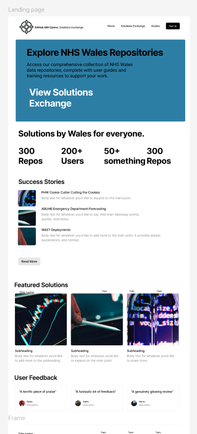

Repository Catalogue
Browse and discover software repositories from across NHS Wales organizations. Our automated catalogue pulls data directly from GitHub Enterprise to provide you with up-to-date information about available code solutions.

Search and Filter
### 🔍 Search Repositories
Search by keywords, repository name, description, or organization
### 🏷️ Filter by Programming Language
- **Python** (112 repositories)
- **JavaScript** (67 repositories)
- **R** (43 repositories)
- **Shell** (28 repositories)
- **TypeScript** (25 repositories)
- **Java** (18 repositories)
- **C#** (12 repositories)
- **Go** (8 repositories)
### 🏥 Filter by Organization
- Cardiff and Vale University Health Board (45 repos)
- Digital Health and Care Wales (38 repos)
- Public Health Wales (32 repos)
- Betsi Cadwaladr University Health Board (28 repos)
- Swansea Bay University Health Board (24 repos)
- Aneurin Bevan University Health Board (22 repos)
- Hywel Dda University Health Board (18 repos)
- Powys Teaching Health Board (12 repos)
- Cwm Taf Morgannwg University Health Board (11 repos)
- Other NHS Wales Organizations (17 repos)
### 🏷️ Filter by Topic/Use Case
- `healthcare` (89 repos)
- `fhir` (34 repos)
- `patient-data` (28 repos)
- `analytics` (45 repos)
- `security` (23 repos)
- `automation` (31 repos)
- `integration` (27 repos)
- `dashboard` (19 repos)
- `api` (52 repos)
- `machine-learning` (15 repos)
Repository Listings
### 🏥 Patient Data Exchange API
**Organization**: Cardiff and Vale University Health Board
**Language**: Python
**Last Updated**: 2 days ago
**License**: MIT
**Contributors**: 12 contributors from 4 organizations
Secure FHIR-compliant API for patient data exchange between NHS Wales systems. Supports real-time data synchronization and comprehensive audit logging.
**Topics**: `fhir` `patient-data` `api` `healthcare` `interoperability`
**Reuse Readiness**: ⭐⭐⭐⭐⭐ Production Ready
[View Repository](https://github.com/cardiff-vale/patient-data-api) | [Documentation](https://github.com/cardiff-vale/patient-data-api/wiki) | [API Docs](https://cardiff-vale.github.io/patient-data-api/)
---
### � Population Health Dashboard
**Organization**: Public Health Wales
**Language**: R, JavaScript
**Last Updated**: 5 days ago
**License**: GPL-3.0
**Contributors**: 8 contributors from 3 organizations
Interactive dashboard for population health monitoring with real-time analytics and predictive modeling capabilities.
**Topics**: `analytics` `dashboard` `population-health` `r-shiny` `healthcare`
**Reuse Readiness**: ⭐⭐⭐⭐ Ready with Documentation
[View Repository](https://github.com/phw/population-dashboard) | [Live Demo](https://phw.github.io/population-dashboard) | [Setup Guide](https://github.com/phw/population-dashboard/blob/main/SETUP.md)
---
### 🔒 Healthcare Security Scanner
**Organization**: Digital Health and Care Wales
**Language**: Python, Shell
**Last Updated**: 1 day ago
**License**: Apache-2.0
**Contributors**: 6 contributors from 2 organizations
Automated security scanning tool specifically designed for healthcare applications and infrastructure compliance.
**Topics**: `security` `automation` `compliance` `healthcare` `scanning`
**Reuse Readiness**: ⭐⭐⭐⭐ Ready with Documentation
[View Repository](https://github.com/dhcw/healthcare-security-scanner) | [Security Guide](https://github.com/dhcw/healthcare-security-scanner/blob/main/SECURITY.md)
---
### � Patient Portal Framework
**Organization**: Betsi Cadwaladr University Health Board
**Language**: TypeScript, React
**Last Updated**: 1 week ago
**License**: MIT
**Contributors**: 15 contributors from 5 organizations
Modern patient portal framework with mobile-first design, supporting appointment booking, secure messaging, and health record access.
**Topics**: `patient-portal` `react` `typescript` `mobile` `healthcare`
**Reuse Readiness**: ⭐⭐⭐⭐⭐ Production Ready
[View Repository](https://github.com/bcuhb/patient-portal) | [Demo](https://bcuhb.github.io/patient-portal-demo) | [Implementation Guide](https://github.com/bcuhb/patient-portal/wiki/Implementation)
---
### 🤖 Clinical Decision Support ML
**Organization**: Swansea Bay University Health Board
**Language**: Python, Jupyter
**Last Updated**: 3 days ago
**License**: BSD-3-Clause
**Contributors**: 9 contributors from 3 organizations
Machine learning models for clinical decision support with pre-trained models for common healthcare scenarios.
**Topics**: `machine-learning` `clinical-decision-support` `python` `healthcare` `ai`
**Reuse Readiness**: ⭐⭐⭐ Beta with Active Development
[View Repository](https://github.com/swansea-bay/clinical-ml) | [Model Documentation](https://github.com/swansea-bay/clinical-ml/blob/main/MODELS.md)
---
### 🔄 Workflow Automation Suite
**Organization**: Aneurin Bevan University Health Board
**Language**: Python, YAML
**Last Updated**: 4 days ago
**License**: MIT
**Contributors**: 7 contributors from 2 organizations
Comprehensive workflow automation suite for healthcare operations, including appointment scheduling, resource allocation, and staff management.
**Topics**: `automation` `workflow` `healthcare` `scheduling` `operations`
**Reuse Readiness**: ⭐⭐⭐⭐ Ready with Documentation
[View Repository](https://github.com/abuhb/workflow-automation) | [User Guide](https://github.com/abuhb/workflow-automation/wiki)
Repository Statistics
Most Active Repositories (This Month)
- Patient Data Exchange API - 45 commits, 8 new contributors
- Population Health Dashboard - 32 commits, 5 new features
- Healthcare Security Scanner - 28 commits, 3 security updates
- Patient Portal Framework - 25 commits, 2 major releases
- Clinical Decision Support ML - 22 commits, 4 new models
Trending Topics
fhir(+15% this month)machine-learning(+25% this month)security(+18% this month)patient-portal(+12% this month)automation(+20% this month)
Collaboration Metrics
- Cross-Organization Projects: 34 repositories with contributors from multiple organizations
- Average Contributors per Repository: 3.2
- Most Collaborative Repository: Patient Data Exchange API (12 contributors from 4 organizations)
Quality Indicators
Reuse Readiness Levels
- ⭐⭐⭐⭐⭐ Production Ready (67 repositories) - Fully documented, tested, and deployment-ready
- ⭐⭐⭐⭐ Ready with Documentation (89 repositories) - Well documented with setup guides
- ⭐⭐⭐ Beta with Active Development (45 repositories) - Functional but under active development
- ⭐⭐ Early Development (28 repositories) - Basic functionality, limited documentation
- ⭐ Proof of Concept (18 repositories) - Experimental or demonstration code
License Distribution
- MIT License: 45% (112 repositories)
- Apache-2.0: 23% (57 repositories)
- GPL-3.0: 18% (44 repositories)
- BSD-3-Clause: 10% (25 repositories)
- Other/No License: 4% (9 repositories)
How to Use This Catalogue
For Developers
- Search for repositories matching your use case
- Filter by programming language or organization
- Review the repository documentation and reuse readiness level
- Contact the contributing organization for implementation guidance
- Contribute improvements back to the community
For Project Managers
- Discover existing solutions before starting new projects
- Assess reuse readiness and implementation effort
- Connect with teams who have solved similar problems
- Plan collaborative development initiatives
For IT Leaders
- Monitor code reuse and collaboration metrics
- Identify opportunities for cross-organization projects
- Track technology adoption across NHS Wales
- Support strategic technology alignment
Data Freshness
Last Updated: Today at 03:00 GMT
Update Frequency: Daily automatic refresh
Data Source: NHS Wales GitHub Enterprise API
Coverage: Public and internal repositories only
Need help finding a specific solution? Contact the GIG Cymru Digital Team for personalized assistance.